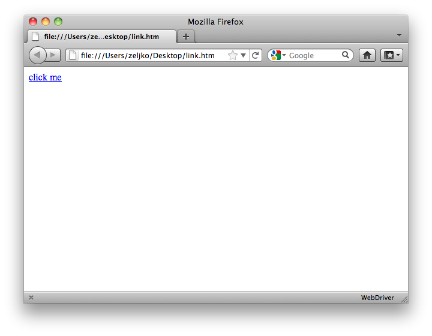

You do not need internet access if you want to follow examples in this chapter.
All examples in this chapter are tried on Ruby 1.9.2p290, RubyGems 1.8.11:
Note: safariwatir does not support a lot of features that are used in this chapter.
Let’s take a closer look at one HTML element. Links are probably the most popular of all HTML elements, so it would be just fair to start there. Usually, you can recognize a link on a web page because it’s text is underlined. It’s HTML looks like this:
1 <a href="clicked.htm">click me</a>
There are two ways of accessing the link, browser.a and browser.link. Both of them do the same thing, but browser.a is not supported in older versions of watir gem and in safariwatir.
You could access the link in a lot of ways (alphabetically): after?, class, css, href, html, id, index, name, text, title, url, xpath and multiple attributes.
Examples:
1 browser.a(:after? => browser.a(:text => "buy"))
2 browser.a(:class => "header")
3 browser.a(:css => "[id=click-me]").click
4 browser.a(:href => "clicked.htm")
5 browser.a(:html => /test/)
6 browser.a(:id => "footer")
7 browser.a(:index => 1)
8 browser.a(:name => "sidebar)
9 browser.a(:text => "click me")
10 browser.a(:title => "click me")
11 browser.a(:url => /watir/)
12 browser.a(:xpath => "//a[@href='clicked.htm']/").click
and multiple attributes:
1 browser.a(:text => "click me", index => 2)
To make sure you could do the exercises from this chapter even without internet access, we will create two HTML files, and create a link from one to the other.
First, create a simple HTML file with only one link in it. Open your favorite text editor, enter the following line in it and save it as link.htm:
1 <a href="clicked.htm">click me</a>
Then create another file, clicked.htm and put it in the same folder as link.htm. You can put anything in clicked.htm file, for example just text Clicked!.
You can save the files anywhere (make sure both files are in the same folder), but I suggest that you save it to desktop, it will be easy to find there. Open link.htm with Firefox.

A simple web page with only one link.
Copy URL from the address bar and paste it somewhere safe, in another file, for example. In my case, URL was file:///Users/zeljko/Desktop/link.htm, since I have saved the file to my desktop. We will need the URL to open the same HTML page later with Watir. Close the browser.
Open command prompt application and open IRB (make sure you are opening command prompt as administrator if you are on Windows):
1 $ irb
2 >
Let IRB know that you plan to use watir-webdriver or watir gem:
1 require "watir-webdriver"
or
1 require "watir"
The output should look similar to this:
1 > require "watir-webdriver"
2 => true
If you get something like this, do not panic:
1 > require "watir-webdriver"
2 LoadError: no such file to load -- watir-webdriver
3 from (irb):1:in `require'
4 from (irb):1
It just means you have to require RubyGems first. In that case, do this:
1 > require "rubygems"
2 => true
3
4 > require "watir-webdriver"
5 => true
In following code examples, do not type lines that start with => (=> true for example). That represents value that Ruby returned. You can ignore those lines, until I say differently.
Open the browser (the following code will open Firefox if you are using watir-webdriver gem, and Internet Explorer if you are using watir gem):
1 browser = Watir::Browser.new
2 => #<Watir::Browser:0x2b6d7f970192e212 url="about:blank" title="">
Go to link.htm:
1 browser.goto "file:///Users/zeljko/Desktop/link.htm"
2 => "file:///Users/zeljko/Desktop/link.htm"
We are ready now to play with the link.
We will start with accessing the link via text, since it is the most common way of accessing links. Our link looks like this:
1 <a href="clicked.htm">click me</a>
There is two ways to access the link, using the exact text, and only part of the text.
Since we know the exact text of the link, we can click it using string. But before we click the link, let’s flash it, just to make sure we are interacting with the right link:
1 browser.a(:text => "click me").flash
2 => 10
Let’s finally click the link:
1 browser.a(:text => "click me").click
2 => []
clicked.htm file should open. Tell the browser to go back to link.htm, we have more exercises to finish there:
1 browser.back
2 => ""
Browser should go back to link.htm.
If you know only a portion of a string, you can use regular expressions. For now, think of regular expressions as a string with a strange syntax. It looks like this: /click/. Please notice the slashes instead of quotes.
When would you use regular expressions? For example, you want to click on a discussion on a forum by its title, but the title changes form On Dogs (1) to On Dogs (2) after the first reply is posted.
You could not use "On Dogs" to locate the link, because link text is On Dogs (1) and Watir will complain that it could not find it.
You could use "On Dogs (1)" to locate the link the first time, but when link text changes to On Dogs (2), Watir will no longer be able to find the link.
In that case, you could tell Watir: Well, I know just one part of the string. and it will happily look at all strings until it finds the one that matches the portion you have provided.
In our example, we will use /click/. First, we will flash the link, and then click it. In this example we do not care if there is any text before or after click.
1 > browser.a(:text => /click/).flash
2 => 10
3
4 > browser.a(:text => /click/).click
5 => []
Of course, tell the browser to go back to link.htm with browser.back. From now on, each time clicked.htm opens, tell the browser to go back to link.htm.
1 browser.back
2 => ""
For this example, let’s look only at the link’s href attribute.
1 <a href="clicked.htm">click me</a>
If you know the full value of link’s href attribute, you could use string to click the link. Of course, flash the link first, to see if everything works, then click it.
1 browser.a(:href => "clicked.htm").flash
2 => 10
The above code will not work in watir gem, but this one will:
1 browser.a(:href => "file:///Users/zeljko/Desktop/clicked.htm").flash
2 => nil
Click it with
1 browser.a(:href => "clicked.htm").click
2 => []
or
1 browser.a(:href => "file:///Users/zeljko/Desktop/clicked.htm").click
2 => 0.078119
Did you remember to tell tell the browser to go back to link.htm with browser.back?
1 browser.back
2 => ""
If you know only a portion of href attribute, you will still use href to locate the link, but this time with a regular expression instead of a string. The usual story: flash, click, back to link.htm.
1 browser.a(:href => /clicked/).flash
2 => 10
3
4 browser.a(:href => /clicked/).click
5 => []
6
7 browser.back
8 => ""
Note: watir-webdriver does not support accessing page elements via url.
url is alias for href. So, everything I said about href is true for url also. Well, not everything. If you try any of the following with watir-webdriver:
1 browser.a(:url => "clicked.htm").click
2 browser.a(:url => /clicked/).click
you would get this error message:
1 Watir::Exception::MissingWayOfFindingObjectException:
2 invalid attribute: :url
3 ...
Watir-webdriver wants to tell you that it does not support accessing links via url attribute. Other gems support it. Since it is just an alias for href, I would recommend that you use href everywhere.
According to the HTML specification, almost all HTML elements can have an id, and each id should be unique on the page. Uniqueness makes id very convenient for us. All other element attributes can appear more than once on the page and Watir will locate only the first element with the specified attribute, and maybe you want the second or the third one. (There is a workaround for that problem, keep on reading.)
Open link.htm in your favorite text editor and change the text to this, and save the file:
1 <a href="clicked.htm" id="click-me">click me</a>
Refresh the page in the browser to make sure the latest version of link.htm is loaded:
1 browser.refresh
2 => []
If you know the entire id:
1 browser.a(:id => "click-me").flash
2 => 10
3
4 browser.a(:id => "click-me").click
5 => []
6
7 browser.back
8 => ""
Sometimes ids on a page are automatically generated by the framework developers use, so ids are different every time a page is opened. Usually the portion of id stays the same. For example, it changes from user007 to user42 to user123. It is obvious that user part of the id is the same every time, so you can use that.
If our example, we will use /click/.
1 browser.a(:id => /click/).flash
2 => 10
3
4 browser.a(:id => /click/).click
5 => []
6
7 browser.back
8 => ""
Another attribute that almost all HTML elements can have is name. It is not supposed to be unique on the page. It is very common that elements that are somehow related on the page have the same name. Change link.htm to this, and reload the page in the browser:
1 <a href="clicked.htm" name="click-me">click me</a>
2
3 browser.refresh
4 => []
If you know the entire name:
1 browser.a(:name => "click-me").flash
2 => 10
3
4 browser.a(:name => "click-me").click
5 => []
6
7 browser.back
8 => ""
If you know the portion of name:
1 browser.a(:name => /click/).flash
2 => 10
3
4 browser.a(:name => /click/).click
5 => []
6
7 browser.back
8 => ""
It is also very common for an HTML element to have a class attribute. Change link.htm to this, and reload the page in the browser:
1 <a href="clicked.htm" class="click-me">click me</a>
2
3 browser.refresh
4 => []
If you know the entire class:
1 browser.a(:class => "click-me").flash
2 => 10
3
4 browser.a(:class => "click-me").click
5 => []
6
7 browser.back
8 => ""
If you know the portion of class:
1 browser.a(:class => /click/).flash
2 => 10
3
4 browser.a(:class => /click/).click
5 => []
6
7 browser.back
8 => ""
It is also very common for an HTML element to have a title attribute. Change link.htm to this, save the file and reload the page in the browser:
1 <a href="clicked.htm" title="click me">click me</a>
2
3 browser.refresh
4 => []
If you know the entire title:
1 browser.a(:title => "click me").flash
2 => 10
3
4 browser.a(:title => "click me").click
5 => []
6
7 browser.back
8 => ""
If you know the portion of title:
1 browser.a(:title => /click/).flash
2 => 10
3
4 browser.a(:title => /click/).click
5 => []
6
7 browser.back
8 => ""
Note: watir and watir-webdriver use zero-based indexing, safariwatir uses one-based indexing.
If the link does not have any attributes that would differentiate it from the other links on the page, but you know the link’s position on the page, you could use it’s index. In this example, it is the first link.
1 browser.a(:index => 0).flash
2 => 10
3
4 browser.a(:index => 0).click
5 => []
6
7 browser.back
8 => ""
Do you see anything strange in the above code? Take a look. I will wait.
Maybe you have noticed that this is the first time we did not use a string (double quotes around the text, remember?) or a regular expression (slashes around the text). We have used just the number one. Such numbers are called integers. Watir uses integers only with index.
Please note that watir and watir-webdriver gems counts from 0 (0, 1, 2…). That is called zero-based indexing. Safariwatir counts from 1 (1, 2, 3…). That is called one-based indexing. (Watir gem used one-based indexing until versinon 2.0.) It is usual in programming that the first element is the number zero (hence zero-based indexing).
This will do the same thing.
1 browser.a.flash
2 => 10
3
4 browser.a.click
5 => []
6
7 browser.back
8 => ""
So, if you do not provide any arguments to link method, it will just click the first link it finds. It is very useful.
It is time for and example. If you know that the link is the first (or even the only) link inside a specific div:
1 <div id="42">
2 <a href="clicked.htm">click me</a>
3 </div>
Save the above HTML as link.htm, and reload the page in the browser:
1 browser.refresh
2 => []
Then try this:
1 browser.div(:id => "42").link.flash
2 => 10
3
4 browser.div(:id => "42").link.click
5 => []
6
7 browser.back
8 => ""
Note: watir-webdriver does not support accessing page elements via after.
Sometimes the only way to identify the element is to say that it should be after another element. Take a look at this example:
1 <a href="clicked.htm">click me</a>
2 <a href="clicked.htm" id="click-me">click me</a>
3 <a href="clicked.htm">click me</a>
Save the above HTML as link.htm, and reload the page in the browser:
1 browser.refresh
2 => []
This will flash the first link, but we want to flash the third one:
1 browser.a(:href => /click/).flash
One of the ways you could do it is, but looks like watir-webdriver does not support after:
1 browser.a(:after? => browser.a(:id => "click-me")).flash
2 TypeError: expected one of [String, Regexp],
3 got #<Watir::Anchor:0x3308eea0e6878cb6 located=false
4 selector={:id=>"click-me", :tag_name=>"a"}>:Watir::Anchor
5 ...
We told Watir that we want to click a link after a div that has id attribute set to click-me. I rarely use it, but there are times when it is really handy.
Do you see something strange in the above code? This is the first time we have used a page element as the second parameter (instead of string, regular expression or integer).
Note: watir-webdriver does not support accessing page elements via html.
If the link you want to access does not have any usual attributes that could uniquely identify it, Watir can handle that too. For example, you need to click the second link:
1 <a href="clicked.htm" onclick="new Ajax.Request('007')">click me</a>
2 <a href="clicked.htm" onclick="new Ajax.Request('42')">click me</a>
One of the really elegant ways to do it is by using html:
1 browser.a(:html => /007/).click
In above example, we have used a regular expression as the second parameter, but I am sure you have already gotten used to them. I am also sure you are already convinced that regular expressions are very useful.
Note: watir-webdriver does not support accessing page elements via css.
CSS selectors are a pretty new addition to Watir, but a powerful one.
For example, if you have a link:
1 <a href="clicked.htm" id="click-me">click me</a>
you could click it with
1 browser.a(:css => "a").flash
or, if you prefer to be more explicit:
1 browser.a(:css => "[id=click-me]").click
This is just one example. There will be entire chapter on CSS selectors.
XPath was not in Watir from the beginning. It was added by Angrez Singh. He also created Watir’s Firefox driver. Aidy Lewis moved Watir’s XPath implementation from REXML to Nokogiri, and now it is faster. XPath is really powerful. Most times you can just use html, but if it does not solve the problem, try XPath.
If you have a link:
1 <a href="clicked.htm" id="click-me">click me</a>
You could click it with:
1 browser.a(:xpath => "//a").click
Or, if you would like to be more explicit:
1 browser.a(:xpath => "//a[@id='click-me']").click
Note: watir gem does not support flash with element_by_xpath.
Another way, especially useful if the element you are trying to access is not supported by Watir:
1 browser.element_by_xpath("//a").click
Or, the more explicit way:
1 browser.element_by_xpath("//a[@id='click-me']").click
Note: note tested.
At the moment, you can use XPath to access elements located in a frame, but you can not use XPath to access the frame itself. In another words, this would work:
1 browser.frame(:name => "one").link(
2 :xpath => "//a[@href='clicked.htm']/").click
but this would not:
1 browser.frame(:xpath => "//frame[@name='one']/")
There will be entire chapter on XPath, so I will not go into a lot of detail here.
Note: watir and watir-webdriver use zero-based indexing, safariwatir uses one-based indexing.
Accessing an element using multiple attributes was not in Watir from the start. This is a killer feature, as you will see. For example, if you have two completely identical links on the same page:
1 <a href="clicked.htm">click me</a>
2 <a href="clicked.htm">click me</a>
and you want to click the second one, you could do it like this:
1 browser.a(:text => "click me", :index => 1).click
This is just one example. There will be entire chapter on multiple attributes.
You can even do stuff with all elements of a particular kind on a page. For example, if you have a page that looks like this:
1 <a href="clicked.htm">click me</a>
2 <a href="clicked.htm">click me</a>
and you would want to display text of all links from the page, this will do it:
1 browser.as.each do |a|
2 puts a.text
3 end
The output should look like this:
1 click me
2 click me
This is just one example. There will be entire chapter on collections.